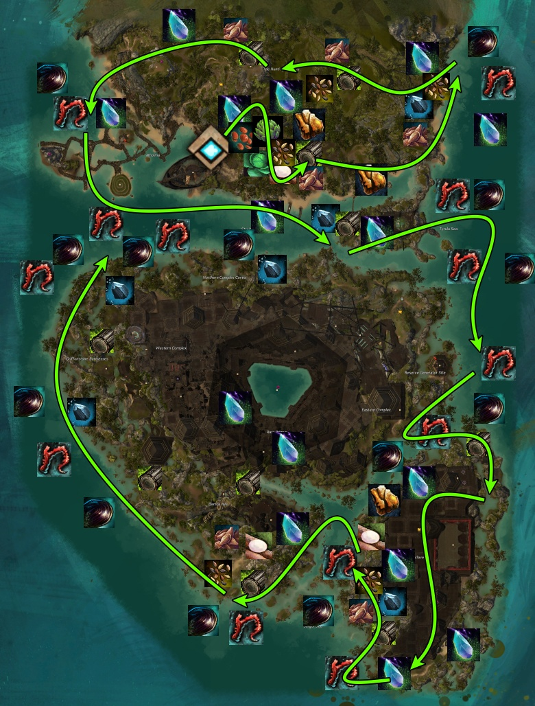

Farming
Potential Gold Per Hour
| Farm Type | Farm | Benchmark |
|---|
| Currency | Info | |
|---|---|---|
| Difluorite Crystal |  |
Gathered from South (Specimen Chamber) meta, North (Gathering Storms) meta, nodes, hearts, Sunken Chests (reward after north meta), Dominus Crystallum, Mark III Suppressor Golem, Beetle Queen, map bonus rewards, legendary bounties |
| Volatile Magic |  |
Gathered from all mobs, South meta, North meta, all events, Sunken Chests, Difluorite Crystals (consumed), Glyph of Volatility |
How to:
If you're the commander, make sure to communicate with the squad on where you're going to and have a relatively steady pace so most can still follow easily.
Have a build that can provide decent DPS (so the event champs/bosses don't take a long time), can provide good mobility, and good AoEs to tag multiple mobs. Check some farming builds here:
Meta Battle Open World Builds
Criteria
Great
Meh
Avoid
Events

Recommendation: Priority of Events
List of bounties
2, 4, 17, 12-13, 10-11, 3, 6, 7-9, 14, 5, 15, 16
Sort by:
| # | Qty | Name | Description | Upscale | Extra |
|---|---|---|---|---|---|
| 1 | 1 | Catch as many fish as you can | Literally catching fish. Cool event, but in terms for gold, not worth it | ||
| 2 | 1 | Defeat Dominus Crystallum | Similar to a Wyvern. Watch for melee telegraphs, phases at 66%, 33%, dashes, and knockdowns | 1 Guaranteed champ | Boss chest, 3 Difluorite Crystals. Once per day, per character |
| 3 | 1 | Defeat the Inquest patrol | Quick event, super easy. It's just out of the way and too quick for squads as the mobs are just veterans | ||
| 4 | 3 | Destroy the Mark III Suppressor Golem | There are 3 possible locations. Quick champion event | 1 Guaranteed champ | Boss chest, 3 Difluorite Crystals. Once per day per character. Not per location |
| 5 | 1 | Disable the Inquest security turrets | More of a solo/duo fun event. Not worth for a squad for profits | ||
| 6 | 1 | Disrupt the Awakened patrol | Quick event with a decent amount of mobs. Kind of out of the way | ||
| 7 | 1 | Free Subject S by destroying the shield generators | Decent event with lots of mobs, but the event-chain as a whole is not worth it as it is slow and buggy. | ||
| 8 | 1 | Escort Subject S to safety | Slow escort. Does not upscale | ||
| 9 | 1 | Defeat all the laboratory security | Sometimes this event bugs out | 1 Guaranteed champ | |
| 10 | 1 | Mount up and help Fenn wrangle the panicked marmoxes | Kind of a quick event, if everyone participates. Need to complete this event to spawn #11, #12, #13. Sometimes this bugs out | ||
| 11 | 1 | Escort Fenn back to the village | Normal escort with lots of animals to drop Cuts of Quality Red Meat | Possible champs, Mob density+ | |
| 12 | 1 | Defend the livestock from the beetle stampede | 3 waves of Scarabs | ||
| 13 | 1 | Defeat Abiri, the Beetle Queen | Very quick boss fight | 1 Guaranteed champ | Boss chest, 3 Difluorite Crystals. Once per day, per character |
| 14 | 1 | Overload the Inquest generator with golem cores | Simple gathering event | ||
| 15 | 1 | Participate in the celebration dance! | Simple gathering event | ||
| 16 | 1 | Participate in the daily motion vision assessment | Another dorky event. More of a solo-event | ||
| 17 | 1 | Stop the flow of Inquest data | Waves of inquest and a champ at the end | 1 Guaranteed champ |
South, Specimen Chamber

There are multiple portals throughout the southern maps to quickly teleport straight to the meta. This is great if your squad is in a middle of a bounty train and are super far from the nearest waypoint.
If you have bought the full tiers of the Karmic Retribution / Empowerment, prepare to get lots of karma/experience!

Waves spawns from the left, right, and inside the defense zone.
From my personal experience, waiting for the mobs to run towards the defense zone decreases the total number of potential mobs that spawn overall. This is due to too much waiting for the mobs to run + you can't contol people who have range that will kill mobs before they reach.
The best way is to make sure you have AoEs, some range, or speed to constantly run to each wave to tag mobs. I do not recommend major/raid DPS on the mobs as they are not ranked any speciality (just normal, not veterans or elites).
| # | Qty | Name | Description | Upscale | Extra |
|---|---|---|---|---|---|
| 1 | 1 | Hold out until the laser array runs out of emergency power | Detailed description above | A few guaranteed champs |

| Name | Mechanics | |
|---|---|---|
 |
Simulacrum of Beyn, Scion of Thorns | Watch out for constant leaps. Every leap knocks players back. He also summons turret plants that shoot out poison volleys. |
 |
Simulacrum of Destroyer Crematus | Creates fire AoEs from him, fire tornadoes, and slams the ground, creating a shockwave that knocks down. He also leaps in front that does burst damage. |
 |
Simulacrum of Jord Ironfrost | Creates shields. When attacking directly at a shield, it retaliates with ice AoE balls. He also throws ice AoE balls around himself. Ice fields damage players over time. At 50%, he pushes players to the edge at all times and puts ice fields on all the edges. |
 |
Simulacrum of Subject Beta | Creates anti-gravity waves. Large laser beams in front and targets a single player to create multiple damaging AoEs. |
 |
Simulacrum of Tlati, the Unchained | Eats players. When the boss jumps around, he leaves poison fields and creates AoEs in front as a cone. |
 |
Simulacrum of Varkesh, the Branded | Dashes constantly. If players are caught in the dash, then they get stunned. |
| # | Qty | Name | Description | Upscale | Extra |
|---|---|---|---|---|---|
| 2 | 1 | Defeat [ name of Simulacrum ] | One of the 6 bosses listed above | 1 Guaranteed champ | |
| 3 | 1 | Defeat [ name of Simulacrum ] part 2 | One of the 6 bosses listed above | 1 Guaranteed champ | 4 | 1 | Defeat the dragon minion simulacrum | Defeat the two bosses from the previous 2 events at the same time. Both share the same health pool so attack the one that is easier to handle | 2 Guaranteed champ | Boss chest, 5 Difluorite Crystals. Once per day, per character |
North, Gathering Storms

After that, 3 events (event #2) spawn simultaneously. I generally prefer to start from the left event #2 and progress to the right. It can work the other way as well, just don't start in the middle because it's just awkward flow. The event will spin you counter-clockwise, but the vortex does not hurt. There are always 3 champion elementals. They can do melee damage and sometimes reflect projectiles.
After event #2, it generally takes about a minute of NPC talk to start event #3. I generally take my time to gather until the event begins. Make sure to let the squad know ahead of time so everyone can be at the event to upscale it.
There are 6 waves of enemies for event #3. This event scales DRAMATICALLY with champions (yay). At the last wave, the champion earth Elemental does not drop loot.
| # | Qty | Name | Description | Upscale | Extra |
|---|---|---|---|---|---|
| 1 | 4 | Defeat the rampaging elementals! | Group of elites/veteran sparks, elementals | ||
| 2 | 3 | Destroy the stormcaller echoes | Counter-clockwise vortex. Does not damage the player. Always 3 champions | 3 Guaranteed champs | |
| 3 | 1 | Help Elder Rhona track down the source of the storm | 6 waves, multiple champions | 1 Guaranteed Champ, upscales |

This boss is a Djinn so that means that when you break their CC-bar, the defense drops dramatically. Start with the bunny and use the bunny when you see the break-bar show up. It takes a few seconds until it does, otherwise you might get baited.
| # | Qty | Name | Description | Upscale | Extra |
|---|---|---|---|---|---|
| 4 | 1 | Defeat Zohaqan | Stand melee range, condi cleanse the slow/chill, knockbacks. CC the breakbar when it's up to remove his defense | Boss chest, 5 Difluorite Crystals. Once per day, per character |

Each Sunken Chest gives a few pieces of Unidentified Gear, Volatile Magic, and a chance for a Difluorite Crystal.
Bounties
| Legendary | Mechanics | Extra |
|---|---|---|
| Starcaller | Just another Hydra, but add more HP and 3 bounty "instabilities". Watch out for dash attacks, AoE frontal attacks, knockdowns, and meteor showers | 1 Difluroite Crystal, chance for 1 of 3 mini Hydras |
| Seneb the Desecrated | Summons AoEs around a player that infects other players when touched. Dash attacks, fire AoEs | 1 Difluroite Crystal |
| Champions | ||
| Ironshell | Just like a veteran Karka. Stmops, rolls, phases at 25% health. Grants retaliation every 25% of its first health. Regenerates to 50% when initially killed | |
| Oakenscorn | Melee stomp that may 1-shot. Summons choyas as backup. Dies quickly | |
| Old Stonehoof | Headbutts players. While headbutting, he launches players into the air multiple times. Can be annoying, but quick if the squad is large or has good DPS | |
| Exterminator IG-04 | This should be a legendary boss. Heavy mechanics. Watch out for telegraphs, when he crouches, he does an expanding AoE of death. At 50% HP and lower, he does multiple wave attacks and laser beams. Avoid if this boss's location is on a meta event | |
| Emogg the Soulbeast | Even though he's a soulbeast, he has a pet attacking players. Both die extremely quick | |
| Magneton Manipulator | Does a vortex, anti-gravity push to players when he spins with AoEs around him. Can be annoying to kill | |
| The Prickly Pair | TWO CHOYAS! They both roll around | 2 Champions instead of 1 |
| Nepheretes | He's the same as an Awakened Canid. Burrows, knockdown players, and slashes. Can be quick with a large squad | |
| Vebis the Inquisitor | Laser beams in front | |
| Crystalwing | Same as a Branded Griffon. Evades attacks periodically. Melee AoEs |
Nodes

Criteria
High Quantity
Meh Quantity
Low Quantity
Sort by:
| Type | Node | Info | Cooldown | |
|---|---|---|---|---|
| Ore |
|
Difluorite Crystal | Consume for Volatile Magic. Can only be gathered from nodes, hearts, events, legendary bounties, and map bonus rewards | |
| Ore | 
|
Mithril Ore | Chance to receive crystals | 1 hour |
| Ore | 
|
Orichalcum Ore | Chance to receive rare orbs | 24 hours |
| Wood | 
|
Baoba Sapling | Chance to receive Foxfire Clusters, Hidden Troves (crystals) | 1 hour |
| Wood | 
|
Ancient Sapling | Chance to receive Foxfire Clusters, Hidden Treasures (orbs), or rare Palm Lumber Cores | 24 hours |
| Plant | 
|
Cluster of Desert Herb | Chance to receive Chili Peppers, Coriander Seeds, Sage Leaf, Sesame Seed, Varietal Sesame Seed, Varietal Clove Seed | 1 hour |
| Plant | 
|
Desert Vegetable | Chance to receive Cassava Root, Flax Fiber, Onion, Garlic | 1 hour |
| Plant | 
|
Mussel | Chance to receive the very rare Freshwater Pearl | 1 hour |
| Plant | 
|
Pile of Flax Seeds | Chance to receive Flax Fiber, rare Flax Blossom | 1 hour |
| Plant | 
|
Coral | Chance to recieve Coral Orb | 1 hour |
| Plant | 
|
Handful of Red Lentils | 1 hour | |
| Plant | 
|
Head of Cabbage | 1 hour | |
| Plant | 
|
Artichoke | 1 hour |
Node Farm
Disclaimer:
In order to receive materials such as variental herbs and quality meats, you need to have completed at least the Charr and Sylvari portion of the Gourmet Training achievement. These materials play a significant role in benchmarks that includes them. Skimmer mastery to dive underwater is also required.
Spreadsheet
To find averages, specific loots, and more, check out the spreadsheet.
Node Farm Calculator
While this farm uses specific Glyphs, check out the Node Farm Calcaulator to test out the estimated profits with different Glyphs. What are displayed in the benchmarks are not neccessarily the best Glyphs to use for maximum profits.
Route:
Start at Atholma Waypoint [&BEMLAAA=]. Northeast of the waypoint has a quick plant farm. Most of the plants are not worth much, but can bring a lot of Volatile Magic with Volatile tools. The entire zone (except in areas with Inquest) are filled with nodes, including the water. A high amount of profits will be from:
- Difluorite (before it caps)
- Coral
- Mussels (rare chance to get a Freshwater Pearl, but the node is abundant here)
In order to receive materials such as variental herbs and quality meats, you need to have completed at least the Charr and Sylvari portion of the Gourmet Training achievement. These materials play a significant role in benchmarks that includes them. Skimmer mastery to dive underwater is also required.
Spreadsheet
To find averages, specific loots, and more, check out the spreadsheet.
Node Farm Calculator
While this farm uses specific Glyphs, check out the Node Farm Calcaulator to test out the estimated profits with different Glyphs. What are displayed in the benchmarks are not neccessarily the best Glyphs to use for maximum profits.
Route:
Start at Atholma Waypoint [&BEMLAAA=]. Northeast of the waypoint has a quick plant farm. Most of the plants are not worth much, but can bring a lot of Volatile Magic with Volatile tools. The entire zone (except in areas with Inquest) are filled with nodes, including the water. A high amount of profits will be from:
- Difluorite (before it caps)
- Coral
- Mussels (rare chance to get a Freshwater Pearl, but the node is abundant here)

Solo Farm
| Farm Type | Farm | Benchmark |
|---|
Solo Farm: Sandswept Inquest

Solo Farm: Sandswept Karka/Drake